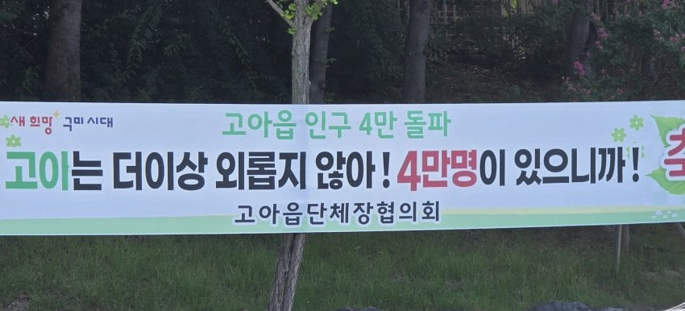

타자가 느린 사람들이 모여있는 읍
고아는 이라고만 쓰지말고 고아읍은 이라고 쓰라고 ㅋㅋㅋㅋㅋ
너 어디 출신이야?
고아 출신
나 고아 출신이야 이러면 존나 당황스럽긴 하겠다 ㅋㅋㅋㅋㅋ
롤 못하는 동네
???: 어떻게 알앗지
이게 컨펌되고 제작이 돼서 게시가 될때까지 아무도 태클을 안걸었다고?
저기서는 고아 출신이라고 해도 하나도 안웃기고
자연스러움 ㅋㅋㅋㅋㅋ 어차피 저 지역에만 걸건데 뭐 ㅋㅋㅋ
삼천포가 사천으로 바뀐 걸 아는 사람: ㄱ-
협회장 이름이 브루스웨인
와 존나 부자동네
나는 또 우리 팀 호소인 새끼들 싹다 포함시켜서 그런줄 알았네
"이름이 어떻게 되시나요"
"고아련"
"아니 욕을 왜 하세요"
"제 이름이 고아련이라구요"
ㄷㄷ
올고아
끌려가서 궁 안 쓰는 사람 4만명!
고아임?
고아출신이가
저기 군부대 이름이 고아부대라 전부 비웃음 ㅋ
그래서 학교이름도 고아에서 선주로 바꼈었지,,
여기 길가다가 고아어린이집이 있어서 너무 놀랐음 이렇게 노골적으로?
고아노
고이라고 써있는건 심지어 오타인건가
고아가 졸 촌구석인데 4만이나 된다고????
고아는 뭐가 유명해서 인구가 그렇게 많냐
동네 이름이 어떻게 고아
고**이**아니냐?저건
옛날에 저동네 갈일있어서 택시타고 저기 가주세요 했더니 택시기사가 외지인이냐고 하면서 여기는 슬픈전설이 있다면서 이야기해주는데
옛날에 이동네 출신 총각이 사귀던 여자의 부모님께 인사를 드리러 갔데
그래서 여친 아버지가,
그래, 자네는 고향이 어딘가? 했더니 총각이
고압니더.
하니까
여친 아버지가 어디 애미애비도 없는 근본없는 고아가 우리 귀한 딸을 넘보냐고 당장 꺼지라면서 고래고래소리를 질렀대
그러면서 택시기사가
웃기죠? 웃기죠?
이러는데 혼자 타지와서 택시탔는데
공포영화가 따로없더라...
억지로 쥐어짜내서 웃는데
너무너무 무서웠음.
손님 웃길라고 드립치는 기사님이 뭐가 무섭냐
그런말씀 하시면 안됩니다
go A cyka blyat!
여기 고등학교 하나가 저래서 이름을 바꿨나?
어떻게 도시 이름이..